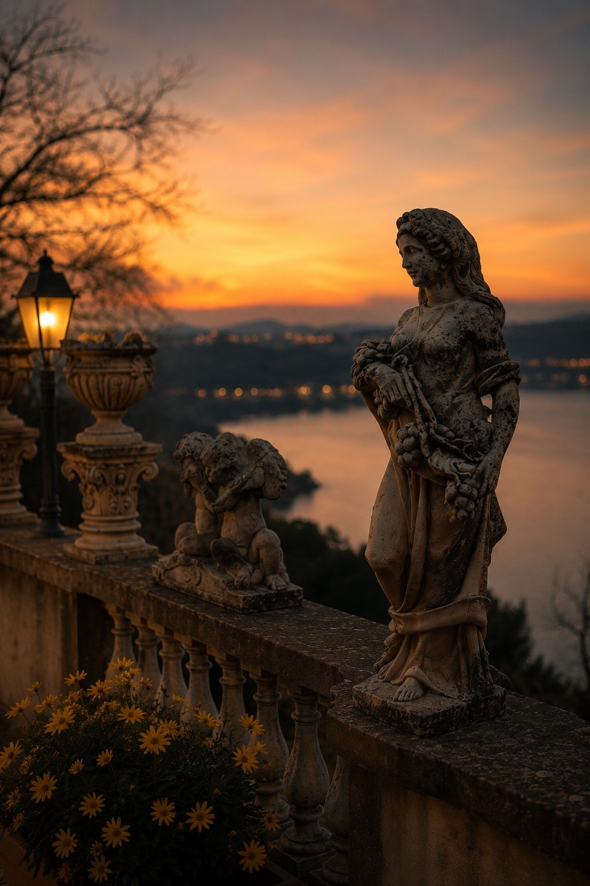

Päpstlicher Palast und Gärten
Sommerresidenz der Päpste, heute Museum mit Gärten über dem See.

KI-generiertes Video
Eine Wohnung mit 85 Quadratmetern, Garten, Seeblick und einer Panoramaterrasse zwischen den Statuen. Raum und Zeit, ganz für Sie.

Von der Balustrade gleitet der Blick über den Garten und bleibt am Albaner See hängen. Abends geht die Sonne hinter den Hügeln unter und die Terrasse leuchtet golden.
Gefällt Ihnen, was Sie sehen?
Buchen Sie Ihren Aufenthalt im Pio XI
Wohnzimmer, Küche, Schlafzimmer und Bad: 85 m² auf einer Ebene, der Garten direkt vor der Tür.
Ausgestattete Privatküche mit Kaffeemaschine, Waschmaschine, TV mit Streamingdiensten, Bademäntel und Sofa. Terrakottaböden und ein Schlafzimmer mit Kleiderschrank und Kommode.
Der Garten ist das Beste: hinausgehen und sitzen. Haustiere sind erlaubt, Parken ist kostenlos.

Castel Gandolfo liegt auf den Hügeln über dem Albaner See, südlich von Rom, und ist für den Apostolischen Palast bekannt.
In der Nähe liegen der Albaner See, der Nemisee und der Regionalpark Castelli Romani, ideal zum Wandern, Kajak- und Kanufahren.
Castel Gandolfo liegt in den Albaner Bergen, rund 25 km südöstlich vom Zentrum Roms. Mit dem Auto über die Via dei Laghi oder die Appia; mit dem Zug fährt die Regionallinie FL4 ab Roma Termini (Richtung Albano Laziale) und hält in Castel Gandolfo.
Der Flughafen Rom-Ciampino ist 9 km entfernt. Das Parken in der Nähe der Wohnung ist kostenlos, an der Straße.
Pio XI Garden & Lake View ApartmentSommerresidenz der Päpste, heute Museum mit Gärten über dem See.
Die Kuppeln der päpstlichen Sternwarte, mit Führung.

Berninis Kirche, der Brunnen und der erste Briefkasten.


Ein kleiner Zeichentrickfilm in unserer Wohnung in 3D: Die Statue von der Terrasse wacht auf, geht durch die Terrassentür hinaus und springt in den Albaner See.
Tauchen Sie ein in den Zauber des Sees
Zeichentrick zum Spaß, nicht maßstabsgetreu
Viale Pio XI 31b, Castel Gandolfo
Auf den Hügeln über dem Albaner See, in den Castelli Romani, südlich von Rom. Mit dem Auto, kostenlose Parkplätze an der Straße, oder mit dem Zug FL4 von Roma Termini bis zum Bahnhof Castel Gandolfo.
Die Karte wird beim Öffnen von Google Maps geladen.
33 Bewertungen auf Booking
Die Wohnung ist blitzsauber, die Aussicht fantastisch und der Aufenthalt wirklich angenehm.Gast, Oktober 2026, auf Booking
Wunderschöne Lage und sehr sauber.Gast, September 2026, auf Booking
Schöne Wohnung mit Seeblick. Groß und gut ausgestattet. Nah am Zentrum.Gast, September 2026, auf Booking

Giovanni Francesco D'Agostino
Gastgeber und Eigentümer des Pio XI · Property Manager
Ich bin Giovanni Francesco D'Agostino, und das Pio XI Garden & Lake View Apartment gehört mir: eine 85 m² große Wohnung mit Garten und Panoramaterrasse über dem Albaner See in Castel Gandolfo.
Ich bin Gastgeber und Property Manager: Ich betreue Ferienwohnungen und kümmere mich selbst um Empfang, Reinigung und Check-in. Wenn Sie schreiben, antwortet Ihnen direkt der Eigentümer, ohne Vermittler.
Ich lebe in den Castelli Romani und gebe gern Tipps von hier: Porchetta in Ariccia, Walderdbeeren in Nemi, der Spaziergang rund um den See und die beste Zeit für den Sonnenuntergang auf der Terrasse.
Wenn Sie auf der offiziellen Website buchen, sprechen Sie direkt mit uns: Wir antworten selbst, helfen bei den Daten und empfehlen Sehenswertes.
Sie zahlen direkt an uns, ohne Portalgebühren: mit Karte, Apple Pay oder Google Pay über Stripe oder per Überweisung, wenn Sie möchten. Sind die Daten nicht frei, erstatten wir alles.
Sichere Zahlung mit Stripe. Ihre Kartendaten geben Sie auf der Seite von Stripe ein, der Zahlungsplattform von Millionen Unternehmen: Sie werden verschlüsselt übertragen, und wir sehen sie nie. Stripe ist nach PCI DSS Level 1 zertifiziert, dem höchsten Standard für Kartensicherheit, und Ihre Bank kann eine 3D-Secure-Bestätigung verlangen. Karten, Apple Pay und Google Pay werden akzeptiert; sind die Daten nicht frei, erstatten wir alles.
Nach unserer Bestätigung können Sie den vereinbarten Betrag (Anzahlung oder Restbetrag) auch mit Karte zahlen. Die Zahlung erfolgt auf der sicheren Seite von Stripe: Ihre Kartendaten sehen wir nicht.
Zahlung erhalten, vielen Dank! Wir schicken Ihnen die Bestätigung per WhatsApp oder E-Mail.
Die Zahlung wurde nicht gestartet. Prüfen Sie Betrag und Referenz oder schreiben Sie uns auf WhatsApp.
Wählen Sie Daten und Gäste, dann zahlen Sie gleich mit Karte oder schicken uns die Anfrage per WhatsApp.
Lieber über ein Portal buchen?
Sie finden uns auch auf Booking, Airbnb und Vrbo, dort ist der Preis aber wegen der Provision des Portals höher. Wenn Sie hier auf unserer Website buchen, sprechen Sie direkt mit uns und zahlen weniger.
Ja, Haustiere sind erlaubt. Nennen Sie uns Art und Größe in Ihrer Anfrage.
Ja, kostenlos, an der Straße.
Nein. Es gibt eine Privatküche, und im Ort finden Sie Cafés und Bäckereien.
Ja, zur Wohnung führen mehrere Treppen. Wenn Sie mit schwerem Gepäck reisen oder eingeschränkt mobil sind, schreiben Sie uns bitte vorher.
Check-in 14:00-16:00 Uhr, Check-out 8:00-11:00 Uhr. Zahlung online mit Karte, Apple Pay oder Google Pay (über Stripe) oder per Überweisung nach Kontakt über WhatsApp.
Im Viale Pio XI 31b in Castel Gandolfo (Rom), auf den Hügeln über dem Albaner See, südlich von Rom.
Das Zentrum von Rom ist etwa 25 km entfernt. Der Flughafen Rom-Ciampino liegt 9 km entfernt, die Metro Anagnina 16 km und die Metro Ponte Lungo 21 km.
Ja. Vom Haus aus sieht man den Albaner See; dazu gibt es einen Garten, und die Panoramaterrasse mit Statuen blickt auf den See.
Ja. Hier buchen Sie günstiger, ohne Portalgebühren, und sprechen direkt mit dem Eigentümer. Sie können mit Karte zahlen oder uns per WhatsApp schreiben.
Ab 75 € pro Nacht. Der Preis hängt von der Saison ab: Wählen Sie Ihre Daten im Formular, dann sehen Sie sofort den Gesamtpreis.